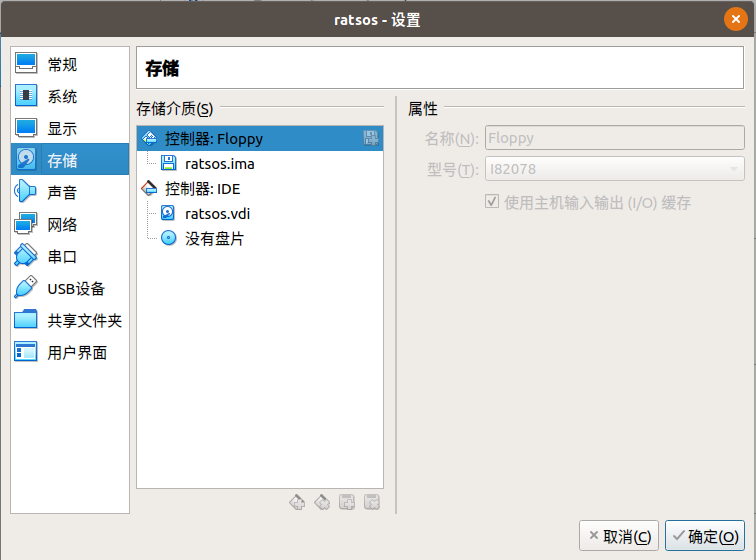
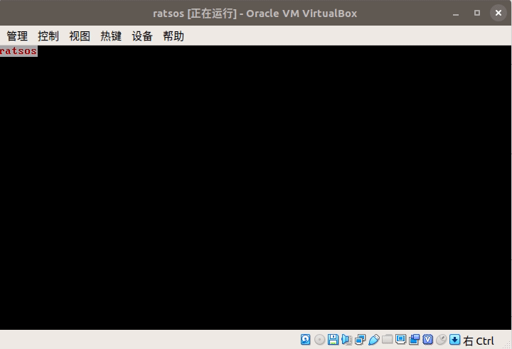
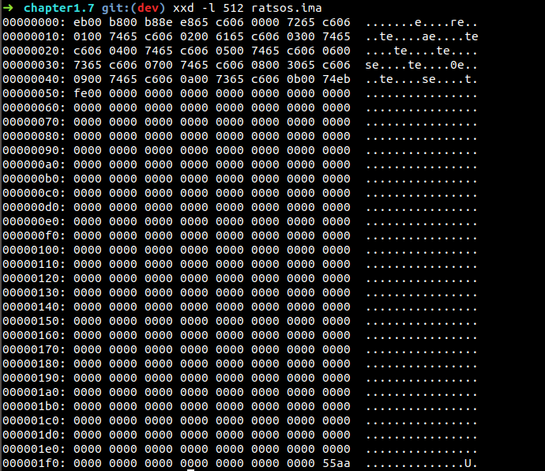

二进制文件
文章目录
二进制文件
[TOC]
所需工具
所需工具
操作系统：Linux : Ubuntu18:http://releases.ubuntu.com/18.04/
汇编编译器：nasm: https://www.nasm.us/
虚拟机：vitualbox: [https://www.virtualbox.org/wiki/Linux_Downloads ]
文本编辑器：
- vscode: https://code.visualstudio.com/
- 插件：hexdump for vscode
- 插件：x86 and x86_64 Assembly
- 插件：Beautify
二进制编码表
英文字符的二进制码（16进制表示）：
| 英文 | 十六进制 | 英文 | 十六进制 | 英文 | 十六进制 | 英文 | 十六进制 |
|---|---|---|---|---|---|---|---|
| A=65 | 41 | H | 48 | O | 4F | V | 56 |
| B | 42 | I | 49 | P | 50 | W | 57 |
| C | 43 | J | 4A | Q | 51 | X | 58 |
| D | 44 | K | 4B | R | 52 | Y | 59 |
| E | 45 | L | 4C | S | 53 | Z | 60 |
| F | 46 | M | 4D | T | 54 | ||
| G | 47 | N | 4E | U | 55 |
使用汇编生成二进制文件
接下来，我们使用汇编语言生成一个二进制文件。这个二进制文件包含一个极其简单的boot引导程序。整个二进制文件可以作为1.44M软盘在虚拟机上运行。
整个程序只做一件事情，就是在屏幕上输出"ratsos"这6个字。
1. 新建汇编文件
新建一个ratsos.asm的文件。打开文本编辑器，写出如下汇编代码：
|
|
2. 编译
在命令行执行
nasm -f bin -o ratsos.ima ratsos.asm
编译。编译时有warning。但是不用去管他。
上面的命令将ratsos.asm编译编译成一个二进制文件ratsos.ima。
这个ratsos.ima文件是最基本的二进制bin格式，并且大小为1.44M（1440x1024= 1474560），我们可以将这个ratsos.ima文件直接当做1.44M软盘镜像来使用。
3. 虚拟机运行镜像
使用vitualbox创建一个系统，添加一个软盘驱动器。
使用软盘驱动器加载镜像文件ratsos.ima。

启动系统
输出如下：

二进制文件分析
以二进制的方式查看文件内容
使用xxd命令分析二进制文件（以16进制方式输出文件的前512字节）
xxd -l 512 ratsos.ima
如图：

其实上面的内容和以下汇编文件生成的内容是一致的
|
|
代码地址：
文章作者 shawn
上次更新 2021-08-01